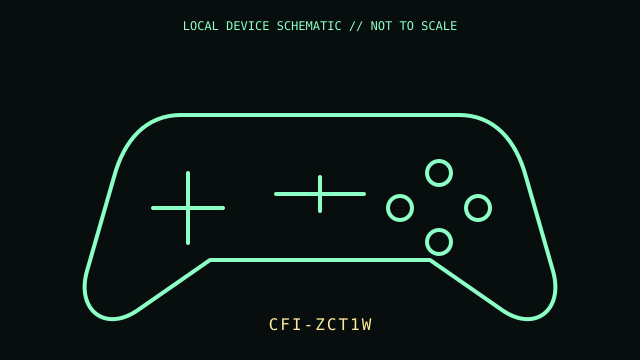

[ GAME CONTROLLERS // IDENTIFIED COMPONENT ]
Sony DualSense Wireless Controller
PlayStation 5 wireless controller with adaptive triggers, haptic actuators, touch surface, and built-in microphone.

MODEL IDENTIFICATION: Manufacturer identity: CFI-ZCT1W. Compare the unit label, regional suffix, and revision against the manufacturer's manual before repair or compatibility claims.
Model specifications
| Catalog subcategory | Game controllers |
|---|---|
| Exact model / ID | CFI-ZCT1W |
| Model-specific features | Bluetooth wireless and USB-C wired/charging connection; two-point capacitive touchpad; integrated motion sensing; 3.5 mm headset jack; rechargeable lithium-ion battery. |
| Interface and host support | Adaptive triggers, haptic effects, speaker, and motion reporting require software/API support. Feature coverage on non-PS5 hosts is application and driver dependent. |
| Revision / driver caveat | CFI-ZCT1W is the original DualSense hardware family; color and later CFI-ZCT1W revisions exist. Match label suffix/revision and do not promise full PS5 effects on generic Bluetooth hosts. |
Preservation and service notes
Use approved USB-C charging equipment and avoid opening the lithium battery assembly. Clean the touchpad and analog sticks dry; document drift, trigger resistance, and battery condition separately.
Record the as-found label, accessories, host OS, driver/firmware version, and test method. Separate observed condition from published specifications; do not treat family-level feature claims as proof of a unit's revision.
Primary manufacturer documentation
- Sony — DualSense wireless controller supportManufacturer support covering controls, pairing, charging, and troubleshooting.
- Sony PlayStation — DualSense controller product pageManufacturer feature overview; consult the rear model label for the hardware revision.
Manufacturer pages may change or retire. Preserve a copy of the applicable manual and note its revision when documenting a physical unit.